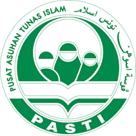
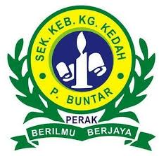
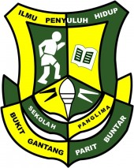
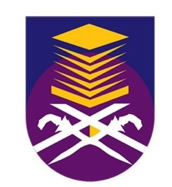

|  |
This is my kindergarten school. I studied at Pasti Al-Munir, Parit Buntar Perak for 2 years ( 5 y.o and 6 y.o). This is the place where I learned how to read and how to count. I also make a lot of new friends here. This place make me to become confident and meet new people when I grow up. |
|  |
This is my primary school. I studied at SK Kampong Kedah, Parit Buntar for 6 years since 2007 until 2012. This school is near from my house. I took my UPSR here and alhamdullillah I pass with flying colors! Thanks to my friends and teachers there ! My childhood started from this school, and this school has many good and easy-to-approach teachers. |
|  |
This is my secondary school which is SMK Panglima Bukit Gantang. I studied at this school from 2013 to 2015. I also took PT3 (Pentafsiran tingkatan 3). This school is located in Parit Buntar. This school is near my home and this school has multi-racial students like Indian, Chinese and Malay. My teens started in this school. During school, I had experience many things like joining the game, clubs and others. This school also has many good and valuable teachers. They teach me a lot. |
|
This is my second of secondary school, SMA Al Falah. I studied at this school from 2016 to 2017. I also took SPM (Siji Penilaian Menengah). This school is located in Tanjung Piandang. This school only has Islamic students and teachers. This school is religious school for Muslim people and I learned many things about Islam. |
|
|  |
I enter this University Technology of Mara branch Kedah and studied here from 2018 to 2021. This university is located in Merbok, Sungai Petani, Kedah. I had a challenging experience after entering university. I learned to be patient even though there are many problems to deal with. I learned to solve my own problems and I started independently after I entered university. I learned timely, sending assignments at a set time. I have many good friends and always help me if I get stuck or need help. I have a very good and easy-to-approach lecturer if i need their help. |